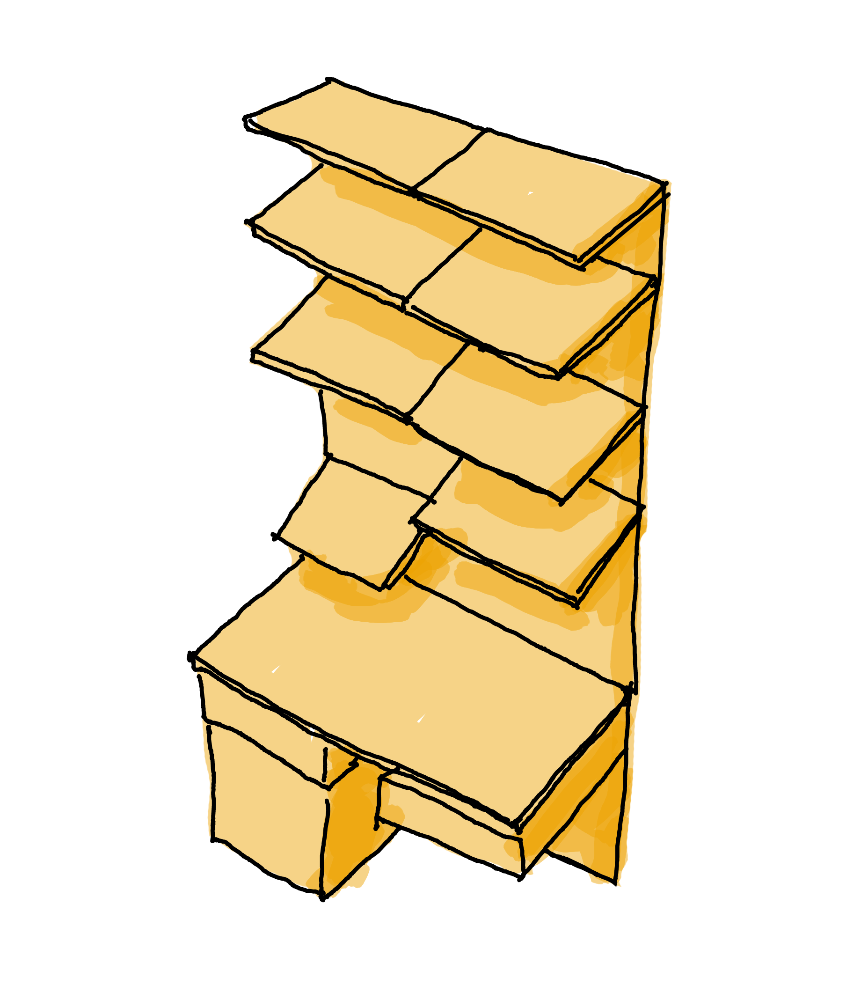

Play-Bio materials and tools library
Material/Tool Inventory
Find a material or tool by searching the full inventory or exploring a storage area. Every result includes its location, quantity, use, guidance requirements, and notes.
All locations
0 materials/tools
Browse by location
Explore the shelves

Hover over a shelf label to locate it, then select it to list its materials. Selecting a material highlights its shelf.